Chapter-10
港澳台之旅·加入，这场永不落幕的繁华
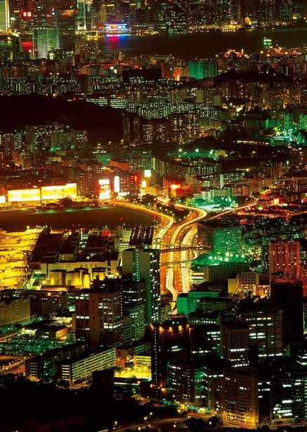
香港
Xianggang·繁华姿态
永远看不完的电影，永远逛不完的商场，永远吃不完的宴席，永远弃不掉的节奏感。这里是香港，不仅是中国璀璨的明珠，更在世界上熠熠生辉，这里是香港，浮华背后，有过彻夜的形孤影单……
港岛
Hongkong Island
东 方 之 珠
一地繁华，一世落寞，落寞的前生已逝，一片紫荆花丛中，新的生命如同喷薄而出的朝阳，再一次冉冉升起于古老的东方大地。
香港，人们每每提及都要感慨无数。感慨来自于它的落寞、它的繁华，它的历史，它的人文……香江水载着陈年旧梦一同流走，港岛，从此与九龙、新界一样成为了上天的宠儿。它是中国一个失而复得的幼子，又像是一个学识满满的“海龟”，不然，一片霓虹之中的璀璨夜色，何以成为都市节奏与时尚风向标的双重代表，带动整个亚洲的步伐？
港岛的景色出了名的美丽。首选的观赏位置，必然是太平山顶。乘上缆车，几分钟的光景，便来到山顶缆车的总站凌霄阁。这绝对是一次难忘的经历，当缆车从总站到观望台，沿途与伦敦杜莎夫人蜡像馆意外邂逅，再往前，是一个动感影厅。观望台名为“狮子亭”，从这里俯视整个港岛，可以将不同姿态的秀丽景色尽收眼底。
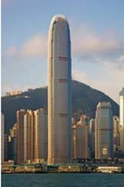
香港高楼大厦林立，而这一座则鹤立鸡群。
夜色中，港岛的美丽无与伦比。
白天的港岛是绿色的港岛，在一片碧色中舒展开来。夜晚的港岛是迷人的港岛，无论是维多利亚的美丽还是汇丰银行的高大，总会让人觉得这片繁华中凝结了太多人的努力，所以更加值得珍惜。
港岛的繁华有一半是源自于这里的人文气息。从紫荆花的故事到港岛八九十年代对于大陆的不断深入的影响，动作片、歌坛的领军人物频频亮相，让人们打开了视野，更加了解这个孕育独特文化的岛屿。
而一直以来，这里都被誉为“购物天堂”，免税店多，名牌多，让女人们垂涎欲滴。无论是中环的皇后像广场，还是金钟的太古广场，再或是铜锣湾的记利佐治街，所到之处，皆是数不尽的高级建筑，一片繁华之景。与此同时，铜锣湾的美食还能充分燃烧起人们的味蕾，在这里，填饱肚子变成了一种尊贵的享受。
漫步于香港的街头，即便只是闲适地行走，也能感受到一种独特的氛围。那氛围来自港岛的人群，来自港岛独特的文化底蕴。怀旧的建筑物，充满老香港味道的街衢，晨曦中显得分外醒目的维多利亚港，为这个繁华都市平添几分华彩。
一沙一世界，一花一天堂，这话说的便是美丽的港岛。
深水湾
深水湾位于香港南区南岸的中部，是一个游泳海滩。位置在浅水湾的西北，南朗山之东。这里有颇多的高档住宅。因为水深故被命名为“深水湾”。
九龙区
Kowloon Area
购 物 天 堂
东南西三面皆被维多利亚港所包围。它与港岛同为香港最为繁盛的市中心，是整个香港不可或缺的一部分。
除了香港岛，九龙也在历史中扮演着不可或缺的角色。那一片凝重中，虽然已经没有了往日的色彩，但是历史的钟声，却在洪荒的时光中悠然响起。
相传，“九龙”的名字原本来自于一个典故。从前，天子出游，来到九龙时不由得被周围山水吸引。遥望中，看到8座山峰紧紧环绕着小岛，于是便将八山称作“八龙”。身边的随从此时来到皇帝跟前，提醒皇帝说天子本身便是人中之龙，应该是“九龙”才对，皇颜大悦，遂将此地更名为“九龙”。
九龙的全称是“九龙半岛”，它是香港三大区域之一。
铜锣湾夜景。这里是香港主要的商业和购物区。
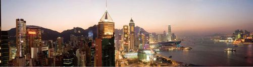
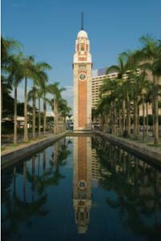
九龙钟楼
在九龙，到处可嗅到商业的气息，商业大战在此拉开帷幕。从尖沙咀到油麻地，再到旺角，都是极具吸引力的地段。不光在港剧中频频出现，更是在世界上享有盛誉。
其中，最为著名的商业中心便是尖沙咀，这里便是传说中的“购物天堂”。从新港中心岛太阳广场，从美丽华商场到新世界，每到一处，无不是超级的好货，大牌的品质。而在尖沙咀附近的天星码头，更是集各种繁华于一体。
走过乐道，去著名的旧书店淘一本英文书籍，购物之后，别忘了提升自我的内心世界！
在新世界中心，面对维多利亚港那面的尖沙咀海滨长廊上，模仿美国好莱坞的星光大道正熠熠发光。九龙清真寺中，燃起一柱香火为未来许下一桩美好。在加诺撒圣玛丽书院，做个内外兼修的睿智女人……
把以上种种拼在一起，就成了一个香港。把香港拆开，便成为一个个香港人。那香江水果然滋润了一方百姓，不然那等繁华昌盛，何来得如此强劲。
如果有一天到了香港，不要惊诧于这里的美丽，只需静静享受……
旺角
Wangjiao
梦 中 “ 江 湖 ”
“让我们相爱或者死亡。”旺角如是说。在王家卫的笔下，它曾经与黑夜一起丰腴地活。在女人的眼中，来过一次便是万劫不复。
古时候，这里被称为“芒角”，因芒草丛生。从地图上看来，那如牛角一般伸入海里的姿态，似乎早已暗示了一种蛊惑，或是诡异的气息。
千年之前，东汉、晋朝、唐朝的人们在这里生息繁衍，千年后，这里的村落叫做“芒角村”。
如紫荆般美丽的香港总是被历史凝重的色彩刻画得淋漓。1860年后，它开始寄人篱下的命运，英伦风席卷，填海、修建避风塘，遂有了码头和道路。几十年之后，这里有了今日的风情。从此，旺角被一片繁华淹没。
旺角在香港的油尖旺，九龙半岛东部。在数百年的发展中，商业取代了工业，铺天盖地，它被林立的楼宇日渐充斥，到处是百货商店和各种各样的餐厅。弥敦道是界限，东面购物，西面住宅，发达的交通光复了所有女人购物的梦想，所以每逢假日，弥敦道之东都会被围得水泄不通。女人街、花园街、金鱼街……那些光是听便让人觉得想要来此一遭的名字，如磁石一般不断吸引着寻梦之客。
旺角的街道，标牌林立。
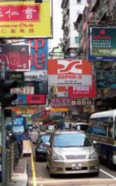
“在我的生命中，曾有过许多梦，梦中是数不清的蕾丝雪纺，涂不完的粉底唇膏”——这便是女人街。从登打士街到至亚皆老街，其中一段通菜街被人们俗称为“女人街”，这里是夜市，也是观光购物的绝佳地点。
相传，女人街源自七十年代小贩蹲在路边的无牌经营，政府为了规范市场，特意推行出“小贩认可区”计划，从此以后，这里成为名正言顺的摊档，而女性服装和女性用品占领了主流地位，俗称便依此而来。
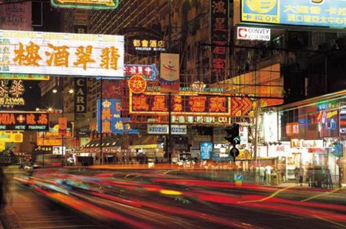
灯红酒绿中的旺角，昭示着这里的繁华无比。
化妆品、手表、手袋、香薰……现在的女人街，早已趋向多元化发展，同时成为本地和外地人必逛的街道，每逢街灯亮起，眼前的街道便是愈加地拥挤，长发、红唇充斥其中，混淆的香水味充满迷惑的气息。
与女人街类似的，波鞋街也是其中一段花园街的俗称。整个街道不过150米长，却因为运动鞋而名声大振。从1980年起，这里便逐渐形成了今日具有特色的购物街道，是街市，亦是闹市。也许是因为年轻人多，血气味浓，才有了后来关于旺角的种种剧集，和人们脑海中挥之不去的江湖仇杀、大哥小弟。
旺角，这个名字似乎牵扯进太多的纠结，那一片市井繁华让人不自觉地想到那些片段。
《旺角卡门》中，刘德华的风华正茂，张学友的血气方刚，张曼玉的清纯动人，虽是一段江湖厮杀，却揉进唯美的爱情，帷幕落下后，是一地落寞的叹息。
它本身便是一段宿命，这宿命，深深地影响着每一个与“旺角”有过牵扯的边缘人类，你，我，皆是如此……
澳门
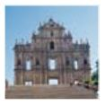
Aomen·清幽阡陌
中西合璧是澳门最大的特点。人们无时无刻不在寻求着心灵的慰藉，所以妈阁庙和大教堂才理所当然地成为了灵魂的皈依之所。然而，苦难已过，面对今日的繁华时，人们仍喜欢怀古，静静地品味那种残缺的美丽，静静地提炼自己的内心。
大三巴牌坊
Ruins of St. Paul
最 美 的 残 缺
来澳门，一定要来看看大三巴牌坊。也许它不够独特，不够别致，可是它的凝重的历史色泽却成为人们一定要瞻仰的理由。
漫步于澳门的街市，身心都会感觉到从未有过的舒坦。虽然四周是步伐流动的景色，可是静谧却仿佛在他们身上贴了标签，一切是那么安详，就连时间也是悄悄地流淌着，生怕惊扰了匆忙的人们。
如果留心观察，你会在漫步的时候偶遇各种各样的教堂与庙宇，似乎是因为这方人民因为历史的原因更需要精神的慰藉吧。在大多数的教堂中，要数名为“大三巴”的圣保罗教堂最为遥远。相传，在1637年这座教堂已经建立，也是当时整个东方最大的教堂。作为当时的风景名胜，它不断遭受外来侵略，如今，就已剩下残存的部分，历经三次大火与百般蹂躏后，残存的前壁成为人们回顾的平台。这平台，便是“大三巴牌坊”。

大三巴教堂内景
高高矗立着的大三巴牌坊，犹如从战场中走出的士兵，经历一番枪林弹雨后，因体力不支而显出疲惫不堪。站在台阶上向上望，仿佛天空都因它而变得凝重。这座本是建于17世纪的教堂，是经历怎样的大火和怎样的不幸，才变得今日的模样？看看那残存的前壁，那不甚清晰的圣经故事石碑，看看那圣人的铜像，也许他们正低低地讲述着教堂曾有过的辉煌岁月。
拾阶而上走到大三巴牌坊跟前，顿时觉得空气都变得庄严而肃穆。那个高大的牌坊，将前尘往事统统收纳，当我们面对它的瞬间，它再将那些往事一一重述，残损的痕迹，便是让人凭吊的示意，而其中的寓意，每个人的理解却都不相同。
那些栩栩如生的雕像，时隔今日依然能看出技艺的精湛。那高超的建筑与铸造工艺，或许是因为牌坊的残存才得以流传至今。
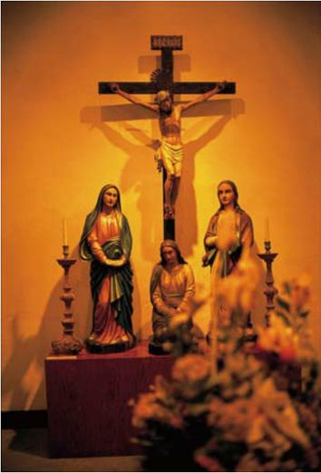
大三巴教堂内景，基督被钉在十字架上的塑像。
变的是人，不变的是景致。每每看到大三巴牌坊今日的容颜，总是容易让人不断回想起过去，那曾有过的已逝去的繁华。然而，一种残缺的美感就在这个瞬间被重新点燃。或许是无奈，或许是沧桑，可是，那种历经沧桑后显出的美丽，就如同维纳斯一般，有着蛊惑人心的魅力。
几只和平鸽绕着牌坊上空盘旋而落，闲适的步子走在大三巴牌坊脚下。也许，这便是某种程度上的新生吧。就在一瞬间，心弦被轻轻地拨动。
有时候，人们要相信一切都有个尽头。无论相聚或者离开，没有什么能天长地久。几经火烧的大三巴牌坊，重新回归母亲怀抱的澳门，万事之间，无偶然，无必然，一切皆是定数，我们能做的，就只是写出内心的一笔，留给自己，或留给后人去评判。
妈阁庙
The Mazu Temple
一 缕 馨 香
浮生若梦，梦中的风景便是尘世中的着实体验。点一柱香火供奉于佛前，那缕馨香中，拾起的是旧梦，而全神贯注的膜拜，便是梦中最为绮丽的一笔。香火延续千年，旧梦不断更迭，回眸处，浮生之中，再无遗憾。
有一首歌：“你可知MACAU，不是我真姓，我离开你太久了，母亲。”澳门，是中国的一场旧梦，梦中，思绪被推回至400多年前。那样一个夏天，葡萄牙人航行至此，靠武器占领了这个景色宜人的小渔村……梦醒时，离家的孩子又重新回到母亲的怀抱。而当年葡萄牙人最初登岸的地点，便是村中的妈阁庙，在闽南语中，“妈阁”便是“MACAU”。
前尘如梦，逝去的光阴一去不返，而小渔村的发展却一直与华夏共同延续着。玫瑰色的教堂林立在小渔村的四处，成为殖民统治中不同民族建造起来的精神慰藉之所。
然而，作为华夏子孙，一直对那份久违的传统文化念念不忘，就好像渔村中的宗教庙堂，过了几百年，依然是香火不断。妈阁庙便是其中的典范。
帮助渔民逢凶化吉的仙人的雕像。
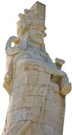
妈阁庙位于澳门南端的妈阁山西麓，建于500多年前的明朝。相传，在宋朝时，福建福田有一位出名的孝女能够占卜凶吉，她丧生于一场海难，却从此羽化而登仙。她念念不忘前世，于是常常在海上显灵，帮助商人和当地的渔民逢凶化吉。渔民们感念她的恩德，于是建立庙宇进行供奉，并尊她为“海神天后”。一片淡然中，妈阁庙清幽地伫立。回眸几百年的岁月，无数文人墨客再次留下题词与石刻，为妈阁庙平添几分淡雅之气。

妈祖阁
一直以来，妈阁庙都成了神话多多的澳门最为重要的标志之一，只要来到澳门，妈阁庙便是必去之地，除了烧香拜佛，感受那里的人文气息，也是一种精神的享受。
从建筑上看，妈阁庙的辉煌跃然而现。无论是在1603年前建立的弘仁殿，还是之后又扩建的石殿与大殿，处处都散发出妈阁庙独特的气韵。这气韵不同于其他宗教场地，你若来到，便会深切地感受。
相传，这看似不大的庙宇，每天都要接待近万人。几百年来，澳门独特的宗教文化竟然从未衰落而且越加兴旺，不得不说是一个出人意料的奇迹。不同肤色的人群，不同地域的文化，截然不同的衣衫，在一个瞬间，画入同一个圆圈。用自己的方式各自膜拜，用自己的言语与神对话，每当看到这样的场景，都让人想到海神的庇护，希望妈阁庙的香火能一直延续，海神的庇护能一直延续。
老庙总是让人与梦想紧密地联系在一起。真的是这样，若不是妈阁庙的一缕馨香，便没有人们在膜拜时虔诚的眼神，若不是那默祷与跪拜，便没有一个又一个梦想的实现。倾听澳门，感受澳门，来到妈阁庙，便是领略这里的开始……
普济禅院
普济禅院俗称“观音堂”，与妈阁庙、莲峰庙一同被列为澳门三大古庙。普济禅院是其中规模最大、占地面积最广、建筑最为雄伟的，也是保存南方庙宇特色较为完整的寺院之一。与此同时，这里还是著名的旅游景点，迄今为止已有360多年的历史。
台湾
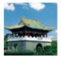
Taiwan·朝气人生
朴素中隐隐透出一丝淡雅，简约却不简单。台湾有着与世无争的风范。儒雅的内质，充满难得的人文之气，有时候却也调皮，即使是淑女也会流连于路边的小吃，即使是绅士也可能骑着摩托车乱转……
台北
Taipei
人 文 之 约
这里有精巧的咖啡店，也有热闹非凡的电影院，有淑女们抿嘴而笑时的优雅，也有婆婆妈妈们砍价时的夸张……
台湾是这样一个地方，有上海的繁荣相，有北京的古朴气，不匆忙，不浮躁，却又充满无尽生活的气息，从平凡市井中便能领略到这里独特的文化味儿。“不到台北，领略不到台湾的繁华。”有人留下这样的句子。的确，和其他地方比起来，台北是台湾最繁华的地方。
台北的夜市闹。在台北，逛夜市就如同赶场子，少了哪场都不成。不是为了欣赏迷人夜色，而是为了奔赴小吃的战场。一个耗仔煎40元，摊主娴熟的技艺让人对小吃的味道信心十足，在地铁士林站下车，眼前人头攒动的场景便是台北著名的小吃集市。前摊后店的格局，小吃与服装相辅相成，担仔面、鸭血汤、酱爆鸡排……让人垂涎三尺。
龙山寺
龙山寺古时候称“艋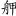”，是台北开发最早的地方之一。清代中期，这里与台南、鹿港一并称为“一府、二鹿、三艋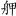”。在修建之初，主要供奉的是观音菩萨。同时，这里也是台北市香火最旺的寺庙之一。
即使今天，这里依然香火鼎盛。
台北的交通乱。这里的乱，不是说车辆有多么地横行无忌，而是那满眼的摩托车，稍不留神，耳边便是一阵呼啸而过的风声。台北的摩托车就如同大陆的自行车一般，被使用的数量惊人，无论是学生还是在职人员，每到交通高峰期，定是车潮汹涌。与此同时，乱的又一大因素便是流浪狗。据说，台北的政府一夜间便能捕捉近千只流浪狗，而且这些狗狗见到生人一副大义凛然的姿态，面不改色心不跳，让政府头疼得不行，成为台北富有特色的一道风景线。
台北的菜市牛。台北人注重传统，不忍放弃流传了多年的文化，于是，在台北，传统的市场被人们叫做“菜市阿”，几条街巷一个，在台北居民生活中扮演了至关重要的角色。
台北，有些“碎碎念”的城市，有些“乱糟糟”的城市，却又是一个充满了人文气的娟秀的城市。漫步在台北的街头，总是让人在途中忍不住回头凝视。一片繁华景象在重重绿意的包裹中显得格外可爱，羡慕之余，只能多走走，多看看，记录下点滴，封存下这份特别的记忆……
台北俯瞰，101大楼是标志性的建筑。
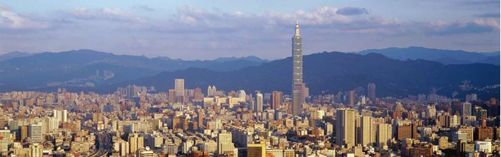
日月潭
Sun Moon Lake
山 自 凌 空 水 自 闲
同是水光山色，这一泊潭水，却显出分外的幽静。像尘世中绝尘的一处仙境，矜持中尽显怡人姿态。
日月潭，一个美丽的名字，蕴含着一个动人的传说。在台湾中部的玉山之北、能高山之南，日月潭被水社山温柔地呵护着，被大尖山英勇地保卫着。这汪台湾最大的湖泊，时刻以美丽的放光与宜人的气候被人们喜爱，并冠以“台湾明珠”的美名。宝岛若是有仙女，一定出生在这里，若是有仙境，这儿一定是首处。本来是单独的日潭和月谭，却因为兴修水利而连为一体，从上空俯视，更是应了“明珠”的称号。
相传，这汪潭水本叫“龙湖”，一对恶龙居住在湖底。有一天，公龙飞身跃起，一口吞下太阳。夜晚月亮出现在天边，母龙也跃出水面，将月亮一口吞下。它们在潭里肆意游走，把太阳和月亮吞下又吐出，当成玩物，而人间，却因为太阳与月亮的消失变得漆黑一片。万物皆面临着死亡的威胁。
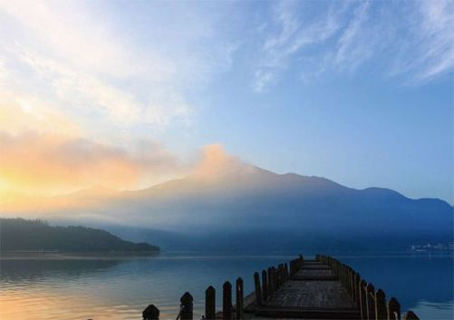
烟波浩渺的日月潭
这时候，英雄出现了，他们便是智勇双全的大尖哥与水社姐。他们悄悄地前往恶龙居住的岩洞，打探到恶龙最怕的是埋在阿里山脚下的金斧头与金剪刀。他们在黑暗中摸索前进，经历各种艰难困苦，终于拿到了这两样制胜法宝。大尖哥跳到潭中，用金斧头砍得恶龙遍体鳞伤。水社姐适时而动，用金剪刀把母恶龙的肚子“咔嚓”一下剪成两段。日月就这样又重新回到了空中。为了保护潭水，大尖哥和水社姐从此便守护在潭的两边。就这样过了许多许多年，他们两个人竟然化做高山。大尖哥高而笔直，被人们称作“大尖山”，水社姐俯首弯腰呵护着潭水，被人们成为“水社山”。
不知何时起，人们愈加发现湖北边的形状像是日轮，南边酷似新月，于是，将龙湖更名为“日月潭”，为了纪念大尖哥与水社姐的付出。
站在日月潭边，除了仰慕之外还有深深的震撼。那环湖的碧色、那层峦的翠绿，那水面的辽阔，让人忍不住陶醉其中。清澈见底的湖水，在阳光下泛出粼粼波光，山的影子倒影在水的心里，温馨的场面让人动容。
湖中泛舟，让人如临仙境。“山中有水水中山，山自凌空水自闲。”早在清代，曾作霖便这样赞美这片碧绿。优雅宁静中，心中与湖面一同漾起无限美好。
乘坐上游轮，湖中心的光华岛已经隐约现于视线当中。四方形的小岛，鹅卵石的地面，原来这里曾是邵族部落。居住在这样的地方，是不是连族人都觉得自己已经羽化而登仙了呢？据记载，清朝这里曾建有神社与书院，在“九二一”大地震后，岛上的设施被损坏，可是在邵族人的争取中，这里成为了他们祭祀祖宗的地方。
日月潭风景区建筑局部
“教师会馆”与“涵碧楼”
在日月潭的西北方，距离潭水口不远处，有一个探向湖面的小半岛，岛上已形成观光中心且有居民长期居住。教师会馆是岛上一处教育界人士的休闲疗养中心，设备完善，规模宏大。而涵碧楼，则是一个达到国际水准的大旅社，除了三面向潭，还四面凌空。从楼上向下眺望，日月潭的山光秀色纷至映入眼帘。
在环绕的群山中，到处是名胜古迹。文武庙便是其中的典范。在文武庙中，孔子与关羽共同被供奉，这样独创的方式，在大陆从没有过。文武庙位于日月潭背面的山腰上，那里地势十分险要。站在文武庙向整个潭水眺望，阳光下湖面荡漾，柔和的风拂过面颊，使人身心愉悦。山脚到庙门处的365级石阶，象征着一年的时光，庙门楣处“崇文重武”四个大字刚劲有力，透出尊严之气。
在距离文武庙2千米左右的青龙山上，玄奘寺高高伫立其上。相传，玄奘寺内供奉着玄奘法师的一部分灵骨。“民族法师”的字样高悬于寺中，以此来纪念玄奘法师西天取经的艰难，以此来表达人们对于他奔赴西天的崇敬。青龙山巅，慈恩塔跃然可见。这座塔依照辽宋古塔的八角式样，每层的檐尾部都挂着小钟，迎风作响，声音清脆，如沁心脾。
日月潭，身在台湾，心若置于仙境。每每流连，总让人身心愉悦。那样清幽的水色，那样碧绿的山峦，眺望之时，心中仿佛涌入无数潭水，冰凉宜人。
日月潭不仅有美丽的传说，更有无边的美丽。
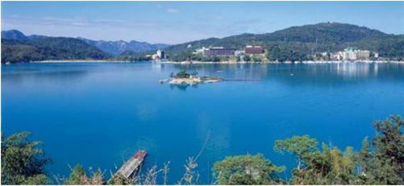
阿里山
Mount Ali
山 高 水 蓝
高山长青，涧水长蓝，
姑娘和那少年永不分呀，
碧水长围着青山转。
阿里山的姑娘美如水呀
阿里山的少年壮如山……
还是孩子时，每每听到这欢快的歌曲，大家都会揪起裙角，快乐地舞蹈一番。那时候不知道阿里山是哪里，依稀觉得那是个充满了无限神秘和甜蜜的地方。长大后，知道那美丽的名字源自于一个古老、勇敢且智慧的民族——邹族。
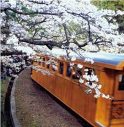
阿里山的樱花火车，使游人乐而忘归。
相传，在250多年前，邹族酋长阿巴里经常带领当地的族人穿山越岭进行打猎，收获颇丰。人们爱戴他，崇敬他，所以把他经常打猎的山取名为“阿里山”，用以纪念阿巴里的勇敢、善猎。
阿里山的海拔超过2600米，东面挨着玉山。从前这里并不出名，随着森林资源不断被开发，每年2月到4月，这里登山赏樱花的游客络绎不绝，那缠绵悱恻的美丽，会在洋洋洒洒的飘落中触动每个人的心弦。在一片秀丽的景色中，阿里山蜿蜒在玉峰山脉间，于是人们喜爱它，流连它。阿里山因火车而著名，因云海而著名，因日出而著名，因那擎天的神木和鲜艳的樱花而著名，似乎在一夜间，这里便成为全球的旅游胜地。人们说“不到阿里山，便不知台湾美”。
在空间距离仅为15千米的阿里山，盘旋其中的铁路却达到了72千米，加上各个林区的支线，长度超过了1000千米。如果算上沿途中的82条隧道，更是有1300千米之长。这样的长度，难怪会被全球瞩目。在超过90年的历史中，铁路线不仅为运送木材提供了便利，更让外界了解这个美丽富饶的地方。
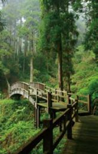
林木葱茏的阿里山景象。
如果想观看壮观的日出和喷薄的云彩，一定要提前一天下午赶往火车站。红色的车身，墨绿色的窗子，在阿里山中徐徐前进。那盘旋铁轨上的列车，仿佛万花丛中一缕馨香，在人们的视线中化作淡淡的一笔，却隽永。车厢中有些陈旧的陈设，长长的靠椅，吊环拉手在车行驶的途中一耸一耸地变换着步调，眼中的一切，仿佛一幅浪漫的微微泛旧的照片，让人忍不住凝视，将景致烙在脑海中。
整个登山旅途也充满了喜人的场景。不过短短几个小时，却看到了从热带到亚热带，从亚热带到温带，再从温带到寒带的各类型植被景观。热带的桉树、槟榔树分外挺拔；亚热带的樟树、楠树矫健多姿；温带红桧浪漫多彩；再往上，便是林涛万顷，一片阴冷之中，寒带植物犹如海洋波涛，在劲风过后发出雷鸣一般的声音。晶莹的泉水飞奔向前，仿佛是急行中的卫士，流过便是山容水态的洗礼。
登高远眺，一片空灵中，大地如铺絮般壮阔，像汪洋，却比汪洋更宽广。这样的景观，便是阿里山著名的云海，让人叹为观止。
阿里山在开满樱花的季节尤其灿烂。
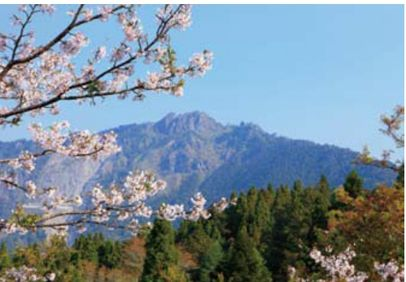
登上阿里山的祝山顶观望楼，细心等待日出时的壮美，之间空中鱼肚泛白，初升的太阳从晨曦中慢慢睁开双眼，天空应和着太阳的色泽而不断发生着变化，从墨兰到淡蓝，从淡蓝到灰白，从灰白到金红，每一次变换，都像是蜕变，都像是灵魂重新破茧而出。待到太阳高挂在空中的那刻，整个山头光芒万丈，金碧辉煌。
但凡来到阿里山的人，必然一睹“神木”的风采。其实神木本是红桧树，却因为它的“非百年不能成材”而闻名于世。馥郁的清香揉进历史的厚重，因为历经沧桑，所以被封为“树神”，这神木无论是寿命或是体积，皆属罕见。站在树下，为一段姻缘祝福，为一段亲情祈愿，这古老的树神定会保佑世人，将愿望一一实现。
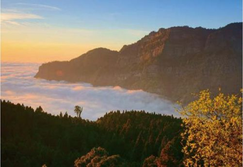
登上山顶，就可看到日出在云海之上。
是殷红，又是雪白，一片锦绣中，那樱花的美让人喜上眉梢。每到樱花开放的季节，那如海洋一般夺人眼球的一片片色彩，壮观中带着一丝骄傲。每个有着浪漫心思的人，都会在这样的景色中欲罢不能。远远望去，原本便是美丽的阿里山更是犹如穿上绿底绯红的礼服，在大自然的舞会中优雅起舞。
沿着阿里山的美丽，开始一段寻找爱情的旅程。虽然时隔日久，阿里山的美丽姑娘早已纷纷奔赴台北实现自身的梦想，可那秀丽的景色丝毫没有打折。
人们因为那甜蜜的歌声来到这里，因为阿里山娟秀的景色而恋上这里，无限遐思涌上心头，仿佛眼前和谐的画面本身便是一首优美的《阿里山姑娘》，让人再一次迈出步子，忍不住翩翩起舞。
野柳
Yeliu
沧 桑 的 史 诗
这个世界上，究竟有什么能够恒久？是海誓山盟的爱恋，还是那埋藏在地域深处的化石？本是微不足道的一笔，本是在不经意间，却化作千万年的坚韧，被后世挖掘、瞻仰，遂陶醉在它那沧桑的史诗一般的容颜，一段记忆从此续写出又一篇章
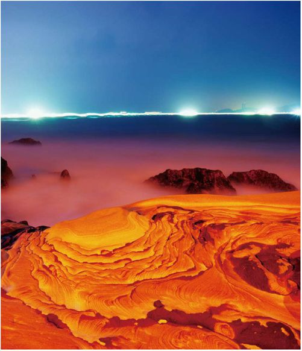
野柳似幻的夜景。
在台湾，人们总是禁不住踏上那狭长的海岬。海岬位于台湾岛基隆西北方的15千米处。这里，每时每刻都在上演着穿越千年的爱恋。
野柳，一直以来都是世界岩石的奇观之一。它形成的原因本是海浪的侵蚀或者岩石的风化再或是海陆的相对运动、地壳运动等。或是蜂窝状，或是豆腐状，也有生姜状，它们形成了海岸的单面山、海岸上的海蚀崖或者海蚀洞等等地形，成为野柳独树一帜的风景。
在野柳的海蚀平台上，最常见的便是纱线类的海胆化石。它们外形如圆盘，看起来略显出坚硬的特质。同时，一种生物活动的痕迹化石也出现在这里，它们的外形好像一根又一根沙棒插在野柳。据说，这些化石验证了从前这里适宜生物生活的舒适环境，而也是因为生物频繁的活动才扰乱了岩层的发育。
野柳风景区的奇岩中，烛台当首屈一指。因为它的罕见，因为它略呈锥形的烛台形状。那径直伫立在地面上不到一公尺的石块，上面细下面粗，在正顶部中央有圆形的石灰质石块，周围还有槽沟，像极了蜡烛。这里还有鲤鱼石，顾名思义，因为状如鲤鱼；海龟石，或许它曾与真正的海龟对视；蕈状石的外形好像蘑菇一般，在很细的石柱上拖着一个大大的岩球，像蘑菇盖。据说，蕈状石排列还有着特别的规律，180个皆集中生长在同一片地方。女王头便是蕈状石中最具代表性的作品。
野柳的烛台，乍望去，真乃名副其实。
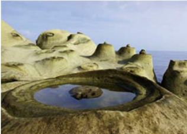
一切皆是大自然的造诣。因为大自然，生物成为化石，石头成为奇石。因为宿命，我们爱上美丽的台湾，因为宿命，我们注定来野柳走上一遭，遐想到很远……